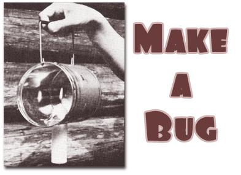

For two years now Caryn and I have lived in a one-room log cabin in the forested foothills of southwestern Oregon's Cascade Mountains. It's half a mile down a footpath to our nearest neighbor, and another mile-and-a-half hike beyond his place to the point where we must leave our truck. Living somewhat isolated as we do, we must often cover the two miles of trail at night after visiting friends or upon returning late from a supply run to the outside world. Often, too, we'll stay the evening with Sonny-the old-timer down the hill-and have to trek home in the dark.
One night our first fall here, just after we'd moved into our rejuvenated cabin, we were about to leave Sonny's place. When I got out our flashlight, the old fellow kind of chuckled and said we'd be better off to use a "bug". Sonny has lived on his mining claim in these hills for 25 years, so he pretty much knows the best ways to get around . . . and I thought I'd better heed what he said.
"Bug", we learned, is the old-time term for a sort of simplified lantern: a can (roughly one-pound size) turned on its side with a handle affixed to the "top" and a candle shoved up through a hole cut into the "bottom". When the gadget is lit, the container acts as a reflector and shield and the grip keeps your hand from getting hot. When the candle burns low after a while, you just push it farther up into the tin. I'd seen a couple of these strange contrivances hanging in the bushes way down the trail, and a couple more on Sonny's porch, but hadn't gotten around to asking about them.
Well, on the way home that night we compared a bug with our flash light . . . and now I'll choose the old-fashioned gadget almost any time. The trouble with the electric torch is that single bright beam which you must continually point at where you're stepping. Even though the bulb does also give off amore general glow, your eyes automatically adjust to the brilliant spot so that it's hard to expand your field of vision. The bug, on the other hand, spreads its light over a large area and makes it extremely easy to follow a trail.
I think the bug also beats a lantern for outdoor night use-especially for trail walking-because its light is more easily directed and not clouded by wires, braces and a perennially dirty chimney. True, a lantern can be set down while a standard bug of the kind described here must be hung . . . but I'm working on a prototype that can do both.
You can whip out a bug in a matter of minutes, completely from recycled materials except for the candle. (If you make your own candles too, so much the better.)
Start with an old-style one-pound coffee can (the flat kind, not the taller, narrower new variety). I've also used 14-ounce tobacco cans and one-pound lard cans, both of which are slightly deeper but work just as well. I'm sure many other tins would be fine too, as long as they have a diameter of five inches or so . . . that is, enough room for a candle to burn freely.
Place the can on its side and punch a hole through the rim at the front and a couple more directly across at the back edge. Fashion a section of coat-hanger, the bail from a gallon paint can or a similar sturdy wire into a handle shape and hook both ends to the container through the holes. just the plain wire works fine but can be embellished with a grip made from a section of small limb, dowel, rubber tubing or hose.
On the side of the can opposite the handle-centered about halfway between the rim and the bottom-make two cuts about one and a half to two inches long, in an "X" pattern. A sturdy pointed knife does this easily. Then take a utility candle and gently shove it through the center of the crosscut, from the outside to the inside, so that it extends an inch or two into the container. The sharp points of metal centered at the "X" will bend inward and hold the shaft of wax securely in place. As the candle shortens with use, it can easily be pushed farther in. The prongs will prevent it from slipping back out. (The size of the candle is up to you, but a thick, long-lasting shape is more satisfactory than a cheap thin one designed to burn fast.)
Finally, pick up the newly made bug, light the candle and walk out into the dark. You'll be pleasantly surprised at how well your substitute lantern-flashlight serves you. Even on the blackest night, one candle power is all you need! The little light should shine on through rain or snow and will gallantly withstand an incredible amount of wind. (We know . . . we've used ours these past couple of years in all sorts of weather.)
The bug is definitely a more for less item. If you're operating on a shoestring budget, why not make one and try it out before you spend money on more conventional, elaborate and expensive light-producing conveniences?
|
 |
|
|